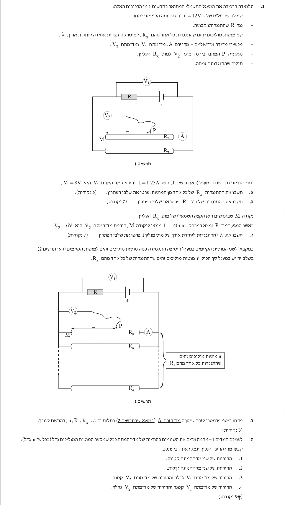
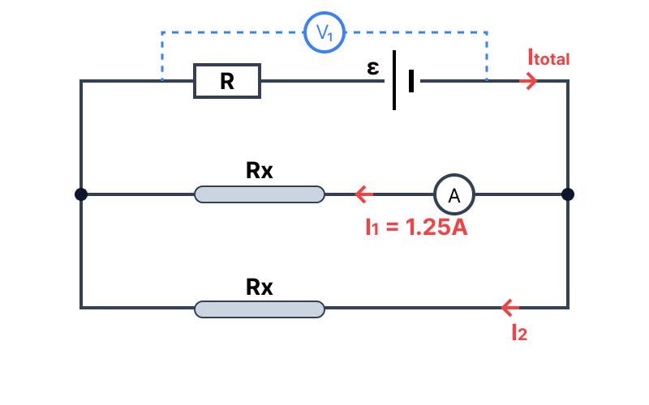

שאלה זו עוסקת בניתוח מעגלי זרם ישר, חוקי קירכהוף והתנגדות תלוית-אורך. המעגל מורכב ממקור מתח, נגד קבוע, ושני מוטות מוליכים המחוברים במקביל.
הגישה לפתרון מבוססת על הבנת אופן החלוקה של הזרם והמתח במעגלים מקביליים וטוריים. נשתמש בחוק אוהם כדי למצוא את התנגדות המוטות, ובחוקי קירכהוף (KVL, KCL) כדי למצוא את ההתנגדות בענף הראשי. בהמשך נבחן כיצד שינוי במספר הענפים המקבילים משפיע על המעגל כולו.
הרעיון המרכזי: פירוק המעגל המורכב למעגל שקול פשוט יותר (טור ומקביל) מונע טעויות ומקל על החישובים.

[תמונת השאלה המקורית]לא נמצאה תמונה בשם question-image.png באותה תיקייה.
תרשים עזר: המעגל השקול לסעיפים א' וב'

[תרשים עזר]לא נמצאה תמונה בשם image-1.png באותה תיקייה.
פישוט של המעגל המראה את חיבור המוטות במקביל לענף הראשי.
טיפ מורה:
כדי להבין מה מודד וולטמטר, כדאי לצבוע את ה"צמתים" (נקודות החיבור) משני צדדיו. נראה שהצומת השמאלי משותף לקצה השמאלי של שני המוטות, והצומת הימני משותף לקצה הימני של שני המוטות. מסקנה: הוא מודד בדיוק את המתח על המוט!
סעיף ב'
מה נתון:
כא"מ הסוללה: \( \varepsilon = 12\text{ V} \).
התנגדות פנימית זניחה: \( r = 0\ \Omega \).
התנגדות כל מוט: \( R_x = 6.40\ \Omega \).
המתח על מערך המוטות: \( V_1 = 8\text{ V} \).
מה מחפשים:
יש לחשב את ההתנגדות של הנגד הקבוע \( R \) המחובר בענף הראשי.
\[ 12 = 2.50 \cdot R + 8 \]
\[ 4 = 2.50 \cdot R \]
\[ R = \frac{4}{2.50} = 1.6\ \Omega \]
\( R = 1.60\ \Omega \)
טיפ מורה:
דרך נוספת להסתכל על זה היא לחשב את ההתנגדות השקולה של כל המעגל. שני מוטות של \( 6.4\ \Omega \) במקביל נותנים \( 3.2\ \Omega \). הזרם הכולל הוא \( I_{tot} = \frac{12}{R + 3.2} \). מאחר שהמתח על המקביל הוא \( I_{tot} \cdot 3.2 = 8\text{ V} \), נקבל מיד ש- \( I_{tot} = 2.5\text{ A} \), ולכן \( 12 = 2.5(R + 3.2) \), שיוביל אותנו לאותה תוצאה בדיוק.
סעיף ג'
הרחבה מושגית: מהי התנגדות ליחידת אורך (\(\lambda\))?
עד עכשיו הכרנו את נוסחת ההתנגדות התלויה בהתנגדות הסגולית: \( R = \rho \frac{L}{A} \).
כאשר עוסקים במוט אחיד, ההתנגדות הסגולית (\( \rho \)) ושטח החתך (\( A \)) קבועים לאורך כל המוט.
לכן, נוח להגדיר גודל חדש שמקבץ את שניהם יחד ונקרא התנגדות ליחידת אורך, המסומן באות היוונית למדא (\( \lambda \)).
\[ \lambda = \frac{R}{L} \]
המשמעות הפיזיקלית של \( \lambda \) היא פשוטה: "כמה אום (\( \Omega \)) יש בכל מטר של מוט?".
אם למשל \( \lambda = 10\ \Omega/\text{m} \), אז לקטע באורך חצי מטר (\( L=0.5\text{ m} \)) תהיה התנגדות של \( 5\ \Omega \).
מה נתון:
מרחק המגע הנייד: \( L = 40\text{ cm} \).
המרת יחידות: \( L = 0.400\text{ m} \).
קריאת מד המתח \( V_2 = 6\text{ V} \).
הזרם במוט העליון לא משתנה: \( I_{top} = 1.25\text{ A} \).
מה מחפשים:
יש לחשב את \( \lambda \), שהיא ההתנגדות ליחידת אורך של מוט מוליך.
נוסחאות בשימוש: \( V = R \cdot I \)\( \lambda = \frac{R}{L} \)
חישוב:
מד המתח \( V_2 \) מודד את מפל המתח על קטע מהמוט שאורכו \( 0.400\text{ m} \). נחשב את ההתנגדות של קטע זה (\( R_L \)) לפי חוק אוהם:
טיפ מורה:
שימו לב שוולטמטר אידאלי מתנהג כמו "נתק" - הוא לא שואב זרם אל תוכו. לכן, הזרם של \( 1.25\text{ A} \) ממשיך לזרום לאורך כל המוט העליון ללא שינוי, והמגע הנייד רק "מודד" את הפוטנציאל מבלי להפריע.
לגבי כל מכשירי המדידה: המכשירים שלנו מוגדרים כ"אידאליים" בדיוק משום שהם לא מפריעים או משנים ערכים במעגל! איתם ובלעדיהם, הפוטנציאל יהיה זהה בכל נקודה, המתח יהיה זהה בין כל שתי נקודות והזרם יהיה זהה בכל מסלול במעגל המקורי. גם אם נוסיף וגם אם נסיר מכשיר מדידה אידאלי, המעגל "לא ירגיש" בכך.
סעיף ד'
מה נתון:
מחברים \( n \) מוטות מוליכים זהים במקביל.
סה"כ יש \( n \) מוטות (במקום 2 שהיו בהתחלה).
התנגדות כל מוט \( R_x \), נגד טורי \( R \), וכא"מ \( \varepsilon \).
מה מחפשים:
לפתח ביטוי פרמטרי לזרם שמודד מד הזרם \( A \) (הזרם דרך מוט בודד) כתלות בפרמטרים \( n, R, R_x, \varepsilon \).
טיפ מורה:
בצעו "בדיקת שפיות" לתוצאה! מה קורה אם ישנם שני מוטות כמו בסעיפים א'-ג' (\( n=2 \))? נקבל \( I_A = \frac{\varepsilon}{2R + R_x} \). אם נציב נתונים מסעיפים קודמים: \( I_A = \frac{12}{2(1.6) + 6.4} = \frac{12}{9.6} = 1.25\text{ A} \), שזה בדיוק הזרם הנתון בתחילת השאלה. הפיתוח מדויק.
סעיף ה'
מה נתון:
מספר המוטות במקביל \( n \) הולך וגדל.
מה מחפשים:
לקבוע ולהנמק איזה היגד מתאר נכונה את התנהגות קריאות מדי המתח \( V_1 \) ו- \( V_2 \).
ככל שמוסיפים נגדים במקביל, ההתנגדות השקולה של המערך המקבילי קטנה. לכן ההתנגדות הכוללת של המעגל קטנה גם היא, והזרם הראשי \( I_{tot} \) גדל.
המתח שמודד \( V_1 \) שווה למתח הסוללה פחות מפל המתח על הנגד הטורי \( R \):
\[ V_1 = \varepsilon - I_{tot}R \]
מכיוון שהזרם הראשי גדל, הביטוי המופחת \( I_{tot}R \) גדל, ולכן \( V_1 \) נטו קטן. מסקנה: \( V_1 \) קטנה.
שלב 2: ניתוח קריאת V₂
מד המתח \( V_2 \) מודד את המתח על קטע מהמוט העליון שהתנגדותו הקבועה היא \( R_L \). הזרם הזורם במוט העליון הוא \( I_A \).
\[ V_2 = I_A \cdot R_L \]
לפי הסעיף הקודם: \( I_A = \frac{\varepsilon}{nR + R_x} \). כאשר \( n \) גדל, מכנה השבר גדל, ולכן הזרם \( I_A \) קטן. מכיוון שהזרם במוט העליון קטן, מפל המתח לאורכו קטן גם כן. מסקנה: \( V_2 \) קטנה.
מסקנה: ההיגד הנכון הוא מספר 1 (ההוריות של שני מדי-המתח קטנות).
טיפ מורה:
בשאלות כאלה לא מתחילים מהתשובות של המכשירים, אלא מהשינוי הפיזי במעגל ועובדים לפי סדר קבוע.
סדר עבודה מומלץ לתלמידים:
1. קודם שואלים: מה השתנה במעגל? כאן מספר המוטות במקביל גדל.
2. מזה מסיקים מה קורה להתנגדות השקולה של הענף המקבילי. כשמוסיפים עוד ענפים במקביל, ההתנגדות השקולה קטנה.
3. אחר כך בודקים מה קורה להתנגדות הכוללת של כל המעגל. אם חלק מהמעגל קטן, גם ההתנגדות הכוללת קטנה.
4. עכשיו עוברים לזרם הכולל שיוצא מהסוללה. לפי \( I_{tot} = \frac{\varepsilon}{R_{tot}} \), אם ההתנגדות הכוללת קטנה אז הזרם הכולל גדל.
5. מכאן בודקים מה קורה למתחים הרלוונטיים במעגל. אם הזרם הכולל דרך הנגד הטורי \( R \) גדל, גם מפל המתח עליו גדל, ולכן נשאר פחות מתח על המערך המקבילי, כלומר \( V_1 \) קטן.
6. רק בסוף עוברים למכשיר הנוסף: ברגע שהמתח על כל אחד מהמוטות קטן, גם הזרם במוט בודד קטן, ולכן גם \( V_2 \) קטן.
הרעיון הוא תמיד ללכת בשרשרת: שינוי במבנה המעגל -> התנגדות שקולה -> זרם כולל -> מתחים במעגל -> קריאות המכשירים. אם שומרים על הסדר הזה, הרבה יותר קשה להתבלבל.
נוסח השאלה המקורית
[תמונת השאלה המקורית]לא נמצאה תמונה בשם question-image.png.